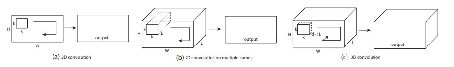

This follows a simple architecture where two dimensional kernels have been extended to three dimensions.
This was outlined to capture spatiotemporal features from
videos.
It has 8 convolutional layers, 5 pooling layers and 2
fully connected layers.
More details can be found
here.

2D and 3D convolution operations. a) Applying 2D convolution on an image results in an image. b) Applying 2D convolution
on a video volume (multiple frames as multiple channels) also results in an image. c) Applying 3D convolution on a video volume results
in another volume, preserving temporal information of the input signal.